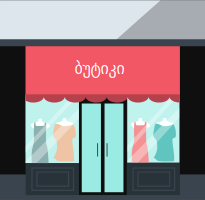
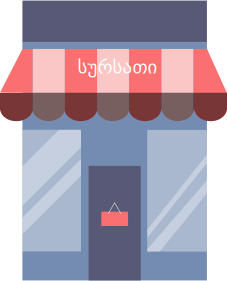
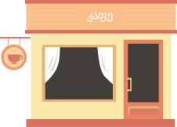

ბგერები გამოვიდნენ სახლიდან და გაისეირნეს. შეგიძლია, მოტივებით ამოიცნო, სად მივიდნენ ბგერები პირველად და სად წავიდნენ ამის შემდეგ. ვიდრე მოისმენ ბგერების „მუსიკალურ მარშრუტს“, დააწკაპე თითოეულ სურათს და კიდევ ერთხელ გაიხსენე, როგორ ჟღერს ქალაქის თითოეული კუთხე.
ახლა კი
 მოუსმინე
ბგერების სეირნობის მარშრუტს. თუ მიხვდები, სად მივიდნენ თავდაპირველად და საით გასწიეს ამის შემდეგ? ჩასვი ციფრები კუთხეების იმავე თანმიმდევრობით.
მოუსმინე
ბგერების სეირნობის მარშრუტს. თუ მიხვდები, სად მივიდნენ თავდაპირველად და საით გასწიეს ამის შემდეგ? ჩასვი ციფრები კუთხეების იმავე თანმიმდევრობით.



